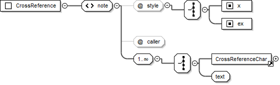

<note> Types¶
Footnote <note>¶
- Element
note
empty (all content is contained within the note’s child char elements)- Added
1.0
- Use
Contains child <char> elements to contain the content for a footnote, endnote, or study note.
- @caller
Note caller. *
+|-| <user defined caller>
A <user defined caller> may be any single character or sequence of characters preferred as the caller for a note.- @style
Content (footnote) type. *
f(footnote) |fe(endnote) |ef(extended / study note)- @category
Optional attribute used to tag the Footnote <note> as belonging to a specific category of study content (e.g. Ideas, People, Places, Objects etc.). The @category attribute is normally only applied to <note> @style=”ef”.
- Valid in
Book Titles, Book Introduction, Book Introduction End Titles, Chapter Content
- Parents
Diagram

Footnote <char>¶
- Element
char
xsd:string- Added
1.0
- Use
An element for marking various footnote content types.
- @style
Footnote content type. *
The <char> (Footnote) @style types list (below) presents an itemization of @style values valid within <char> elements which are children of <note> @style=”f”, <note> @style=”fe”, and <note> @style=”ef”.- Valid in
Diagram

Footnote <char> @style Types¶
fr¶
- @style
fr
- Use
Footnote “origin” reference.
This is the chapter and verse(s) that note refers to.- Valid In
Any Footnote <char>
Text and Formatting Sample - Mark 1.1 (GNT)
<note caller="+" style="f">
<char style="fr">1.1: </char>
<char style="ft">Some manuscripts do not have </char>
<char style="fq">the Son of God.</char>
</note>
ft¶
- @style
ft
- Use
Footnote text
The primary (explanatory) text of the footnote.- Valid In
Any Footnote <char>
fk¶
- @style
fk
- Use
A specific keyword/term from the text for which the footnote is being provided.
- Valid In
Any Footnote <char>
Text and Formatting Sample - Genesis 3.20 (GNT)
<note caller="+" style="f">
<char style="fr">3.20: </char>
<char style="fk">Adam </char>
<char style="ft">This name in Hebrew means "all human beings."</char>
</note>

fq¶
- @style
Footnote translation quotation.
- Use
A quotation from the current scripture text translation for which the note is being provided.
Longer quotations are sometimes shortened using an ellipsis (i.e. suspension dots “…”).- Valid In
Any Footnote <char>
Text and Formatting Sample - Mark 1.1 (GNT)
<note caller="+" style="f">
<char style="fr">1.1: </char>
<char style="ft">Some manuscripts do not have </char>
<char style="fq">the Son of God.</char>
</note>

fqa¶
- @style
fqa
- Use
Footnote alternate translation.
Used to distinguish between a quotation of the current scripture text translation, and an alternate translation.- Valid In
Any Footnote <char>
Text and Formatting Sample - Mark 1.4 (GNT)
<note caller="+" style="f">
<char style="fr">1.4: </char>
<char style="fq">John appeared in the desert, baptizing and preaching; </char>
<char style="ft">some manuscripts have </char>
<char style="fqa">John the Baptist appeared in the desert, preaching.</char>
</note>

fl¶
- @style
fl
- Use
Footnote “label” text.
Can be used for marking or “labeling” a word or words which are used consistently across certain types of translation notes (such as the words “Or” in an alternative translation style note, “Others”, “Heb.”, “LXX” etc.).- Valid In
Any Footnote <char>
fw¶
- @style
fw
- Added
3.0
- Use
Footnote witness list.
For distinguishing a list of sigla representing witnesses in critical editions.- Valid In
Any Footnote <char>
Note
Apparatus entries of printed critical editions are densely packed with information. One key part is the list of witnesses supporting a specific reading. The witnesses are usually represented by sigla consisting of one character, an abbreviation, or a number. It can be very helpful to distinguish witness lists from other footnote text, which can make it simpler to introduce checking tools for these lists, and to create linking and reader helps in digital representations.
Text and Formatting Samples - Matthew 28.14 (Nestle-Aland 29)
<note caller="⸀" style="f">
<char style="fr" closed="false">28,14 </char><char style="ft" closed="false">υπο </char>
<char style="fw" closed="false">B D 0148. 892</char>
</note>

Matthew 4.1 (Nestle-Aland 29)
<note caller="°" style="f">
<char style="fr" closed="false">4,1 </char><char style="fw" closed="false">B Δ 700</char>
</note>

fp¶
- @style
fp
- Use
Footnote additional paragraph.
Use this marker to if you need to indicate the start of a new paragraph within a footnote (uncommon).- Valid In
Any Footnote <char>
fv¶
- @style
fv
- Use
Footnote verse number.
A verse number in the the text quotation or alternative translation.- Valid In
Any Footnote <char>
Text and Formatting Sample - John 7.38 (GNT)
<note caller="+" style="f">
<char style="fr">7.38: </char>
<char style="ft">Jesus' words in verses 37-38 may be translated: </char>
<char style="fqa">“Whoever is thirsty should come to me and drink. </char>
<char style="fv">38</char> As the scripture says, ‘Streams of life-giving water
will pour out from within anyone who believes in me.’”
</note>

fdc¶
- @style
fdc
- Deprecated
3.0
- Use
Material to be included only in publications that contain the Deuterocanonical/Apocrypha books.
Deprecated (use is discouraged)
 Recommended alternate: General purpose use of <char> @style dc wherever DC-only content is being marked.
Recommended alternate: General purpose use of <char> @style dc wherever DC-only content is being marked.- Valid In
Any Footnote <char>
Note
Other <char> @style types may be nested within any of the standard footnote <char> @style types shown in the list above.
Cross Reference <note>¶
- Element
note
empty (all content is contained within the note’s child char elements)- Added
1.0
- Use
Contains child <char> elements to contain the content for a cross reference or study cross reference.
- @caller
Cross reference caller. *
+|-| <user defined caller>
A <user defined caller> may be any single character or sequence of characters preferred as the caller for a note.- @style
Content (cross reference) type. *
x(cross reference) |ex(extended / study cross reference)- Valid in
Book Titles, Book Introduction, Book Introduction End Titles, Chapter Content
- Parents
Diagram
Cross Reference <char>¶
- Element
char
xsd:string- Added
1.0
- Use
An element for marking various cross reference content types.
- @style
Cross reference content type. *
The <char> (Cross Reference) @style types list (below) presents an itemization of @style values valid within <char> elements which are children of <note> @style=”x”.- Valid in
Diagram

Cross Reference <char> @style Types¶
xo¶
- @style
xo
- Use
Cross reference origin reference.
This is the chapter and verse(s) that target (@style=”xt”) reference(s) are being provided for.- Valid In
Text and Formatting Sample - Matthew 2.23 (GNT)
<note caller="-" style="x">
<char style="xo">2.23: </char>
<char style="xt">Mk 1.24; Lk 2.39; Jn 1.45.</char>
</note>

xop¶
- @style
xop
- Added
3.0
- Use
Published cross reference origin text.
In some texts, the content intended to be published in the position of the cross reference origin text xo does not follow the typical<chapter><separator><verse>pattern. An origin reference following this pattern is required for validation of the cross reference location.<char @style="xop">...</char>can be used in order to supply the content intended for publishing, similar to the use of chapter@pubnumber and verse@pubnumber.- Valid In
Text and Formatting Sample - Jonah 1.1-5 (Bulgarian Orthodox Bible)
<note caller="-" style="x">
<char style="xo">1:1 </char>
<char style="xop">Гл 1. (1) </char>
<char style="xt">4 Царств. 14:25.</char>
</note>
...
<note caller="-" style="x">
<char style="xo">1:2 </char>
<char style="xop">(2) </char>
<char style="xt">Бит. 10:11. Иона 3:3.</char>
</note>
...
<note caller="-" style="x">
<char style="xo">1:4 </char>
<char style="xop">(4) </char>
<char style="xt">Пс. 106:25.</char>
</note>
...
<note caller="-" style="x">
<char style="xo">1:5 </char>
<char style="xop">(5) </char>
<char style="xt">4 Царств. 17:29.</char>
</note>

xt¶
- @style
xt
- Use
Cross reference target reference(s).
The list of target scripture passages being suggested as references for comparison/review with respect to the text (or concept) of the origin reference.
A list of book name abbreviations and chapter + verse references, separated by semicolons or other book list separator character.- Updated
3.0 (attributes)
- Valid In
Attributes 
An additional link-href attribute for <char> can be used in this context, followiung the definitions for linking attributes.
- @link-href
Citation form for the term in the glossary
- link-href
Unambiguously identifies the scripture target reference using a standard scripture reference format. (default)
Book names must be one of bookCode. Chapter verse separator is always a colon:. A string of pattern:[A-Z1-4]{3}(-[A-Z1-4]{3})? ?[a-z0-9\-:]*
In some scenarios a target reference is written in a format which cannot be accurately parsed and identified. Providing thelink-hrefattribute allows greater flexibility in the use of char@style xt.
In this context,link-hrefshould only target scripture references for the current text (i.e. references to other project texts or non-scripture URIs are not allowed)
Text Sample - Genesis 2 (Russian Synodal, Protestant Version, extending the sample for para@style cd - chapter description)
<chapter number="2" style="c" sid="GEN 2" />
<para style="cd"><char style="xt" link-href="GEN 2:1">1</char> Бог благословляет седьмой
день; <char style="xt" link-href="GEN 2:8">8</char> человек в раю Едемском; четыре реки;
дерево познания добра и зла. <char style="xt" link-href="GEN 2:18">18</char> Человек дает
названия животным. <char style="xt" link-href="GEN 2:21">21</char> Создание женщины.
<para style="p">
<verse number="1" style="v" sid="GEN 2:1" />Так совершены небо и земля и все воинство их.
<verse eid="GEN 2:1" />
</para>
<para style="p">
<verse number="2" style="v" sid="GEN 2:2" />И совершил Бог к седьмому дню дела Свои, которые
Он делал, и почил в день седьмой от всех дел Своих, которые делал.<verse eid="GEN 2:2" />
</para>
A number (7) alone marked with <char style="xt">7</char> is ambiguous, since it could refer to chapter 7 or verse 7 (in Paratext, a number alone is interpreted as a chapter reference). Extending char@style xt with the link-ref attribute makes it possible to express the target reference unambiguously.
<char style="xt" link-href="MAT 6:7">7</char>
<char style="xt" link-href="MAT 6:7">verse 7</char>
<char style="xt" link-href="MAT 6:7">v7</char>
xta¶
- @style
xta
- Added
3.0
- Use
Target reference(s) extra / added text.
Used for marking text which should be ignored when identifying or linking to cross reference target references.- Valid
Text Sample - Matthew 3.0 (GNT)
<note caller="-" style="x">
<char style="xo">3.0: </char>
<char style="xta">Compare with </char>
<char style="xt">Mk 1.1-8; Lk 3.1-18; </char>
<char style="xta">and</char>
<char style="xt">Jn 1.19-28 </char>
<char style="xta">parallel passages.</char>
</note>
xk¶
- @style
xk
- Use
A keyword from the scripture translation text which the target reference(s) also refer to.
- Valid In
xq¶
- @style
xq
- Use
A quotation from the scripture text.
Use of a quotation would be intended to help the reader to understand the portion of text (or concept) for which the target (xt) reference(s) are being supplied.- Valid In
xot¶
- @style
xot
- Use
References (or other text) which is only to be included in publications that contain the Old Testament books.
- Valid In
xnt¶
- @style
xnt
- Use
References (or other text) which only to be included in publications that contain the New Testament books.
- Valid In